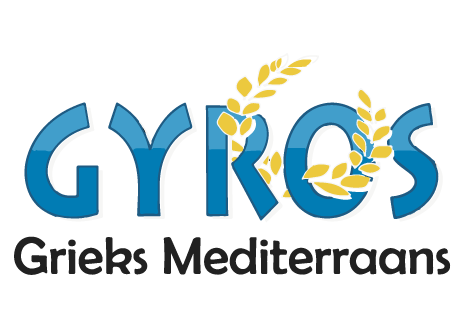

Werk
Ik ben bezorger bij een grieks eettentje. Ik leer hier niks wat betreft ICT maar wel qua interactie met mensen. Ik bezorg al ongeveer 3 jaar, verder heb ik eventjes gewerkt op de glasfabriek in leerdam maar ivm ziekte moest ik hier mee stoppen. Verder heb ik ook gewerkt in supermarkten als vakkenvuller, 2 verschillende supermarkten, de spar en de nettorama. Na een tijdje kwam ik er achter dat dit werk niet voor mij was weggelegd en heb ik besloten een scooter rijbewijs te halen en ervoor te gaan om scooter bezorger te worden. Zo heb ik eerst gewerkt bij Aksu, 2 jaar lang. Hierna kreeg ik een baantje aangeboden bij gyros waar ik een hoger loon en gunstigere werktijden kreeg, dus die keuze was snel gemaakt. En nu werk ik ongeveer een jaar bij gyros en ik heb het daar goed naar mijn zin, maar zoals eerder vernoemd hebben geen van deze baantjes iets te maken met de ict opleiding die ik nu doe.